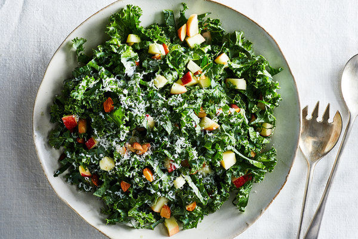

Kale Salad Recipe

This is a great recipe for a refreshing summer kael salad featuring lots of fresh vegetables and fruits as toppings
Ingredients
- 1 bunch of Kale
- 1/2 cup Apple
- 1/3 cup Sliced Almonds
- 1/4 cup Sliced Red Onion
- 3 tbsp Olive Oil
- 2 tbsp Lemon Juice
- 1 tsp Honey
- 1 tsp Lemon zest
- A pinch ofSalt
- Parmesan cheese (optional)
Instructions
- Make dressing by whisking together oil, vinegar, lemon juice, honey, lemon zest, salt, and pepper.
- Add kale and apples
- Add almonds and parmesan (or anyother toppings of your choice)
- Serve and enjoy!